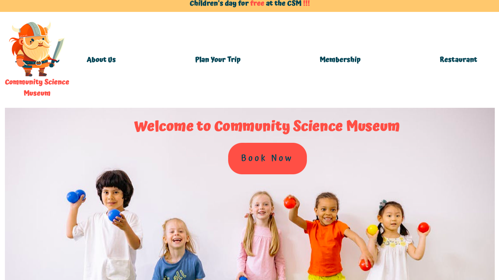

Rainy Days
This semester project, part of my first-year front-end development studies, aims to create an engaging and interactive website for primary and middle school children. Prioritizing user-friendliness, easy navigation, and a vibrant appeal, the site features key sections such as the Home Page, Trip Planning, Membership, and Restaurant pages. Built with HTML and CSS, the project encourages young learners to explore and enjoy an interactive museum experience.